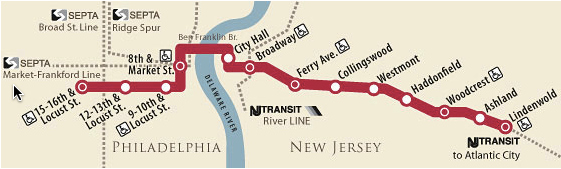
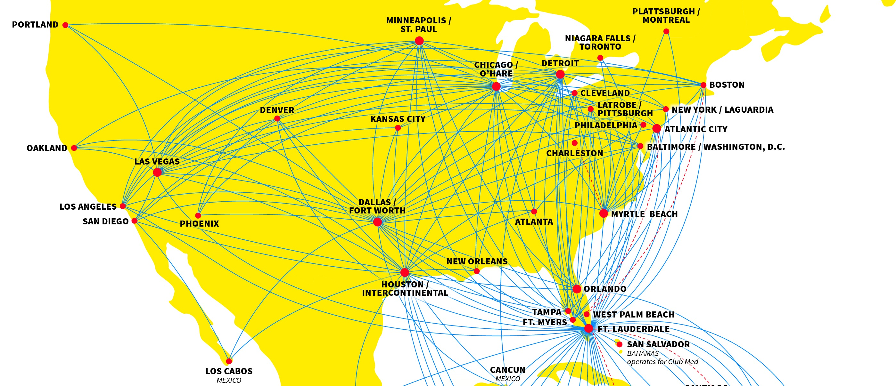

Intro to Algorithms
Welcome!
Girl Develop It is here to provide affordable and accessible programs to learn software through mentorship and hands-on instruction.
Some "rules":
- We are here for you
- Every question is important
- Help each other
- Have fun!
Welcome!
One extra-special rule for this class:
- Algorithms class gets confusing. Calling something challenging "obvious" can come out sounding a little bit condescending.
- If the point you're about to explain is TRULY obvious ("clear, self-evident, or apparent"), then by definition you shouldn't need to explain it.
What we'll cover
- What is an algorithm?
- How to solve a problem with an algorithm, including:
- Stating a problem formally
- Writing psuedocode
- Proving correctness
- Analyzing runtime
- Introduction to Graph Theory
- Introduction to Trees
- Introduction to Recursion
- Introduction to Sorting
- Introduction to Greedy algorithms
What we won't cover
- A semester's worth of algorithms lectures
- Every algorithm ever
- ...or really, most algorithms (see Wikipedia)
- Rigorous proofs
- Advanced mathematical analysis
Warm-up exercise!
Your mission:
Find a way to shake the hand of every person in the room in the shortest time possible, but in a way that you can be confident you really did shake everyone's hand.
What are some approaches you came up with?
What is an algorithm?
An algorithm is an explicit, precise, unambiguous, mechanically-executable sequence of elementary instructions.
The word derives from the name of the 9th century Persian mathematician al-Khwarizmi.
What is an algorithm?
Is this sequence of instructions from the gnomes on South Park an algorithm?
Step 1: Collect underpants.
Step 2: ????
Step 3: Profit!
Verdict: No, this is not an algorithm. Step 2 is not specific, and a machine could not execute it.
What is an algorithm?
Is this sequence of instructions for taking out money from the ATM an algorithm?
Step 1: Insert card into ATM.
Step 2: Type your PIN on keypad.
Step 3: Enter an amount to withdraw less than your total balance.
Step 4: Receive money.
Verdict: Yes, this is an algorithm.
What is an algorithm?
Is this sequence of instructions from my shampoo bottle an algorithm?
Step 1: Lather.
Step 2: Rinse.
Step 3: Repeat.
Verdict: No, this is not an algorithm. Step 3 is ambiguous: what do we repeat, and until when?
Exercise!
Your mission: Think!
What are some algorithms from your everyday life?
What are some algorithms you've encountered while programming?
Why bother learning algorithms?
a.k.a. Why are you here?
- It's like weight lifting for your brain. Exercise the muscles now so that they're ready to use when you need them.
- It will help you think of techniques for solving problems.
- It will expose you to some classic problems in computer science, which are often referenced in articles, tech talks, and interview questions.
How to solve a problem with an algorithm
1. State the problem formally.
Be as clear as possible. Use generalized variables instead of specific examples or instances of the problem.
Bad: Sort some numbers like \((51, 62, 27, 3, 94)\).
Good: Sort an array of integers \(A_{1}, A_{2}, \ldots A_{n}\) in increasing order.
Exercise!
Can you transform this loosely-defined instance of a problem into a well-defined statement of a more generic problem?
Let's say I gave you five blocks with the weights of 1 pound, 2 pounds, 5 pounds, 8 pounds, and 10 pounds, respectively. Could you fill a sack with blocks so that its weight is exactly 21 pounds?
Interested in thinking more about this? It's called the "Knapsack Problem".
How to solve a problem with an algorithm
2. Find a solution to the problem*
* Note: this step in particular makes this list NOT an algorithm
You might solve the problem using known techniques, ingenuity, or a little bit of both.
Find a way to express your solution to others, perhaps through the use of pseudocode.
Pseudocode
- Uses the structure of formal programming languages and mathematics.
- Breaks algorithms down into primitive steps.
- The primitive steps may be written using mathematics, pure English, or an appropriate mixture of the two.
- Reveals the internal structure of the algorithm but hides irrelevant implementation details.
- Makes the algorithm much easier to understand, analyze, debug, and implement.
Pseudocode
Here is an algorithm for singing "99 Bottles of Beer on the Wall", for arbitrary values of 99:
BottlesOfBeer(\(n\)):
For i ← n down to 1
Sing "i bottles of beer on the wall, i bottles of beer,"
Sing "Take one down, pass it around,"
Sing "i − 1 bottles of beer on the wall."
Sing "No bottles of beer on the wall, no bottles of beer,"
Sing "Go to the store, buy some more, n bottles of beer on the wall."
Handshake problem
Find a way to shake the hand of every person in the room in the shortest time possible, but in a way that you can be confident you really did shake everyone's hand.
One possible solution:
Stand in two parallel lines facing each other. Shake hands with the person in front of you. Take a step to the left, where the last person at the end of the line moves to the beginning of the other line. Continue this process until you have shaken everyone's hand.
Handshake problem
Let's express it with pseudocode!
HandshakeWithEveryone(\(P[1 .. n]\)):
⟨⟨i represents the number of people you still need to shake hands with⟩⟩
for i ← n down to 2
⟨⟨shake hands⟩⟩
line1 ← P[1 .. n/2]
line2 ← P[n/2 + 1 .. n]
ShakeHands(line1, line2);
⟨⟨shift over one, and wrap the last guy⟩⟩
P’[n] = P[1]
for j ← n down to 2
P’[j-1] = P[j]
P ← P’
Exercise!
Write pseudocode that prints the lyrics of the song "BINGO" for arbitrary long names of dogs.
There was a farmer who had a dog
And BINGO was his name-o
B-I-N-G-O, B-I-N-G-O, B-I-N-G-O
And BINGO was his name-o
There was a farmer who had a dog
And BINGO was his name-o
(clap)-I-N-G-O, (clap)-I-N-G-O, (clap)-I-N-G-O
...
How to solve a problem with an algorithm
3. Prove your algorithm is correct.
- We must convince our audience (and ourselves!) that the algorithm actually does what it's supposed to do.
- The algorithm must be correct for all possible inputs. It's not enough to show that the algorithm does the right thing on some example input.
- Usually requires a formal, mathematical proof of correctness.
Mathematical proofs
Just kidding. We're totally not going to cover this today; it would need a class of its own.
In lieu of knowing how to construct formal proofs, you can do a few other things in practice:
- Try to reason, even informally, about why your algorithm is correct.
- Explain your algorithm to a peer. You'll have to be very clear to convince your peer, and your peer's feedback can be valuable.
- If you're coding, write unit tests that cover all possible inputs.
How to solve a problem with an algorithm
4. Analyze the runtime of your algorithm.
(and/or storage space needed to execute the algorithm)
We want to communicate how long our algorithm will take to execute, and we want to be able to compare it against other algorithms claiming to do the same task.
It's impossible to predict what size input your algorithm is going to have to operate on, so we express runtime in terms of the size of the input.
Analyzing runtime
Let's consider the expression \(2x + 7\) for different inputs of size \(x\):
| If \(x=0\): | \(2*0 + 7 = 7\) |
| If \(x=1\): | \(2*1 + 7 = 9\) |
| If \(x=10\): | \(2*10 + 7 = 27\) |
| If \(x=100\): | \(2*100 + 7 = 207\) |
| If \(x=10000\): | \(2*10000 + 7 = 20007\) |
The constant \(7\) becomes less and less a part of the answer as the size of \(x\) gets bigger and bigger.
Analyzing runtime
Asymptotic analysis is the method of characterizing a mathematical function by how it trends as the input size approaches infinity.
In computer science, we use big O notation to talk about asymptotic growth.
You say: "two ex plus seven is big oh of ex"
Analyzing runtime
To find the big O function, you can often "drop" terms from your expression that grow significantly slower than the leading term.
In practice, you shouldn't have to think too much about complicated equations, but it's important to understand where the idea of "big O" comes from.
Analyzing runtime
For your purposes, it's probably best to think about big O conceptually.
Example 1: What is the first element of the array \(A[1 .. n]\)?
Algorithm: Simply return \(A[1]\), regardless of the size of the number of elements, \(n\).
This took us a constant amount of time, a.k.a. \(O(1)\).
Analyzing runtime
Example 2: What is the largest number in the array \(A[1 .. n]\)?
b ← -infinity
for i ← 1 to n
if A[i] > b
b ← A[i]
return b
We had to loop over every element of the array, so we had to look at all \(n\) inputs.
This took us a linear amount of time, a.k.a. \(O(n)\).
Analyzing runtime
Example 3: Does the array \(A[1 .. n]\) contain any duplicates?
for i ← 1 to n
for j ← 1 to n
if i = j
continue
else if A[i] = A[j]
return true
return false
We have two nested loops over the array.
This took us a quadratic amount of time, a.k.a. \(O(n^{2})\).
How to solve a problem with an algorithm
Let's review what we've learned!
- State the problem formally.
- Find a solution to the problem.
- Prove your algorithm is correct.
- Analyze the runtime of your algorithm.
Got it? Good. Now let's have some fun!
Graph Theory
A graph is defined as \(G = (V, E)\), where \(V\) is a set of objects called vertices (singular: vertex), and \(E\) is a set of edges joining pairs of vertices.
Graphs represent a set of concepts and how they are related to each other, and they can be used to model many concepts.
Graph Theory in Real Life
Transit maps, like PATCO:

Graph Theory in Real Life
Flight maps, like for Spirit Airlines:
Graph Theory in Real Life
The possibilities are endless. Here's a few more:
- Wikipedia articles and the hyperlinks between them
- Users or objects on a social media site and the "friendships" or "likes" between them
- Relationships of movie actors, so as to play Six Degrees of Kevin Bacon
Once you have modeled your problem as a graph, then you can use Graph Theory to solve your problem.
Bridges of Königsberg
The city of Königsberg in Prussia was set on both sides of the Pregel River, and included two large islands which were connected to each other and the mainland by seven bridges.

Bridges of Königsberg
The big question:
Is it possible to find a walk through the city that would cross each bridge once and only once?
Exercise: Try it!
Bridges of Königsberg
The key piece of intuition:
It follows that every vertex (except for the start and the finish) must have an EVEN number of edges touching it.
Bridges of Königsberg
Definition: We call the number of edges coming out of a vertex the degree of the vertex.
Definition: A walk or a path is a sequence of vertices and edges, where each edge's endpoints are the preceding and following vertices in the sequence.
Definition: A tour or a circuit is a walk where the vertices at the beginning and end of the walk are the same.
Bridges of Königsberg
This problem was studied by Leonard Euler (pronounced "oil-er") in 1735 and laid the foundations for graph theory and topology.
In Euler's honor, we say that a graph that contains exactly zero or two vertices of even degree has an Eulerian path (or walk).
If the start and endpoints are the same vertex, then it is called an Eulerian tour (or circuit).
Bridges of Königsberg
Conclusion: Since the graph corresponding to the Königsberg bridges has four vertices of odd degree, it cannot have an Eulerian path.
Exercises
1. Find an Eulerian trail for the graph below:
2. A graph is called complete if every pair of distinct vertices has an edge between them. (No loops from a vertex back to itself.) Draw the complete graph on 1 vertex, 2 vertices, 3 vertices, 4 vertices, and 5 vertices.
Graph traversal
Definition: A graph is connected if it is in one piece; that is, if a path exists between any pair of vertices.
Suppose we have a connected graph where each vertex has a label, and we're looking for a vertex with a particular label.
There are two well-known algorithms that we can use.
Graph traversal
Depth-first search (DFS): Starting from some vertex, explore as far as possible down each branch before backtracking.

Graph Traversal
Breadth-first search (BFS): Starting from some vertex, fan out to as many vertices as possible before exploring deeper into the tree.

Graph Traversal
When you should use DFS versus BFS is something that varies on the nature of the graph you're searching.
If the graph expands rapidly, then it may take too much memory to remember all the nodes you're fanning through for BFS.
If the graph is very deep, then it might take too much time getting lost down individual paths for DFS.
Exercise
Let's say you were looking for the vertex "f". How many vertices do you have to check against when searching by DFS? by BFS?
Graph Theory: Wrap up
If you like this stuff, then you might want to look into more Graph Theory problems, such as:
- Traveling Salesman Problem
- Four Color Theorem
- Hamiltonian paths
- Minimum spanning tree
- Max Flow / Min Cut
Day 2: Warm-up exercise!
Reading these slides ahead of time? This slide will move around to be in the actual place where day 2 starts. Plus, some content might change depending on how quickly we get through material on Day 1.Your mission:
Sort yourselves in height order following the Merge Sort algorithm.
We'll walk through it together!
Merge Sort Part 1: Divide
- Start as one unorganized clump of \(n\) humans.
- Split into two even groups.
- Each of the two groups splits into two groups (total: four groups of \(n/4\) humans). Keep track of how you are splitting.
- Continue splitting up (and keep track of the splits!) until there are \(n\) groups, each with \(1\) human.
Merge Sort Part 2: Merge
- Each pair of humans that was the last to break apart should get back together into a group of 2.
- Compare between the two of you who is taller and who is shorter. Shorter person stands on the left side, taller person stands on the right side.
- Now the two pairs that originally split apart from each other work together to merge...
Merge Sort Part 2: Merge
- Starting from the SHORTEST person in each group, figure out who is truly the shortest. Let's say this person came from group A. The shortest person moves to the left-most position. The other short person from group B stays put.
- The next-shortest person from group A now compares against the person who stayed put.
- Continue comparing until your two pairs are merged into a line of four.
Continue this process until everyone has merged into a SINGLE line!
Reduction
Reducing one problem X to another problem Y means to write an algorithm for X that uses an algorithm for Y as a black box or subroutine.
The correctness of the resulting algorithm cannot depend in any way on how the algorithm for Y works. The only thing we can assume is that the black box solves Y correctly.
Think of the black box Y as MAGICAL.
Recursion
Recursion is a particularly powerful kind of reduction, which can be described loosely as follows:
- If the given instance of the problem is small or simple enough, just solve it.
- Otherwise, reduce the problem to one or more simpler instances of the same problem.
Recursion
When we reduce problem X to smaller versions of problem X, we rely on those smaller versions of problem X magically solving themselves.
My teacher used to call this the magic of the "Recursion Fairy".
Recursion
To solve a problem with recursion:
- You need to be able to solve some sort of base case. This is often done on inputs of size 0 or 1.
- You need to be able to use the results that the recursion fairy gives you.
- Don't try to recurse over an infinite list of items.
Recursion: DFS
Remember Depth-First Search that we talked about before? We can express that as a recursive algorithm.
DFS(graph \(G\), vertex \(v\), searchterm \(i\)):
if v is null
return false
else if v's label matches i
return true
else
for every edge from v to other vertex u
return DFS(G, u, i)
Recursion: DFS
We've reduced the problem of finding label \(i\) in a huge graph \(G\) to finding label \(i\) in a slightly smaller graph, \(G\) less the vertex \(v\).
Once we have the answer from the subgraph, we can simply return it.
And it just works.
Thanks, Recursion Fairy.
Exercise
Consider the following problem regarding the population of rabbits:
- Each pair of rabbits produces a new pair of offspring each month
- Rabbits become fertile in their second month of life
- Old rabbits never die
If a pair of newborn rabbits are introduced in January, how many pairs of rabbits will there be at the end of the year?
Recursion: Fibonacci
Perhaps it's useful to know that that problem was posed in 1202 by Leonardo Fibonacci...
We can express how to calculate a term in the Fibonacci series recursively!
Fibonacci(\(n\)):
if (n < 2)
return n
else
return Fibonacci(n-1) + Fibonacci(n-2)
Recursion: Fibonacci
Something to keep in mind: often with recursion, you repeat the same calculations over and over again as you recurse.
If you have enough storage space, you can save some time by saving values as you calculate them. This is called memoization.
Recursion: Wrap up
You can often solve problems by reducing a problem to another problem.
If you reduce a problem to one or more smaller instances of itself then you are performing recursion.
Solve for a small base case and be able to combine and return the results of the smaller, magical pieces.
Recursion: Wrap up
Interested in solving problems with recursion? Look into some other problems that have elegant recursive solutions, such as:
- Towers of Hanoi
(did you get to play with it before class?) - Binary search
- Filesystem traversal
- Lots of other algorithms that can be expressed recursively!
Sorting Algorithms
In today's warm-up, we sorted ourselves using the Merge Sort algorithm.
There are lots of other ways to sort things!
Sorting Algorithms
- Selection sort - repeatedly find the smallest element and append to the sorted list
- Insertion sort - repeatedly take the first element and find it's place in the sorted list
- Quick sort - repeatedly picks a pivot point and finds elements smaller and larger than the pivot
- Merge sort - divide into small groups and repeatedly merge the sorted sub-lists
- Radix sort - repeatedly sort by significant digits, from smallest to largest
- Bubble sort - repeatedly compare pairs and swap if necessary until the list is sorted
Sorting Algorithms: Visuals!
Special topics
If there's one thing I learned in computer science classes, it's that the speaker always talks about their own research last.
Today I'm going to teach you about coin sets.
Quick exercise
Let's say you are a cashier and you owe somebody 43 cents.
1. What is the maximum number of coins you could give to the person?
2. What is the minimum number of coins you could give to the person?
Coin sets
We can characterize the denominations of the coins of the US with an array of values called a coin set:
You'll use the minimum number of coins by always choosing the largest denomination coin that is not larger than the amount you have left to make.
Greedy algorithms
A greedy algorithm is an algorithm that always makes the locally-optimal choice with the hopes of finding a global optimum.
Sometimes, a greedy algorithm finds an optimal solution.
For many problems, a greedy algorithm will NOT produce a correct solution. But sometimes it produces a close-enough approximation to the optimal result.
Non-Greedy coin sets
Instead of the standard US coin set, what if you had the following coin set:
Spoiler alert: this is a coin set where the greedy algorithm WON'T always work. There is at least one counterexample to greediness.
Exercise: Find an amount of change that you CAN make greedily. Find an amount of change that you CANNOT make greedily.
Non-Greedy coin sets
Antarctica Dream-Dollars, the official currency of Nadiria, the lost colony of Antactica, is a fun example of a non-greedy coin set:
Were the coin set creators to have left off the 365 or were they to include rather the denomination 364, they would have a greedy coin set!
Non-Greedy coin sets
A real-life example of a non-greedy coin set is the English system of currency from pre-1971:
Final Wrap Up!
- What is an algorithm?
- How to solve a problem with an algorithm, including:
- Stating a problem formally
- Writing psuedocode
- Proving correctness
- Analyzing runtime
- Introduction to Graph Theory
- Introduction to Trees
- Introduction to Recursion
- Introduction to Sorting
- Introduction to Greedy algorithms
Recommended Textbooks
Introduction to Algorithms - Cormen, Leiserson, Rivest, Stein (available on Amazon)
About this book: a.k.a. "CLRS", a well-known advanced undergraduate textbook for a course in algorithms
Discrete Mathematics and its Applications - Rosen (available on Amazon)
About this book: a well-known junior undergraduate textbook for a course in discrete mathematics, which is generally an expected prerequisite for algorithms
Recommended Textbooks
Introduction to Graph Theory - Robin J. Wilson
(available on Amazon)
About this book: An advanced undergraduate textbook for a course dedicated to the study of graph theory.
Jeff Erickson's Algorithms notes
These notes provided some of the backbone of this class. Some definitions and examples in these slides were taken directly from these notes. Many thanks to Jeff for making his not-a-textbook an available resource.
http://www.cs.illinois.edu/~jeffe/teaching/algorithms
Thank you for attending!
Please help us make this class better by completing this short survey: